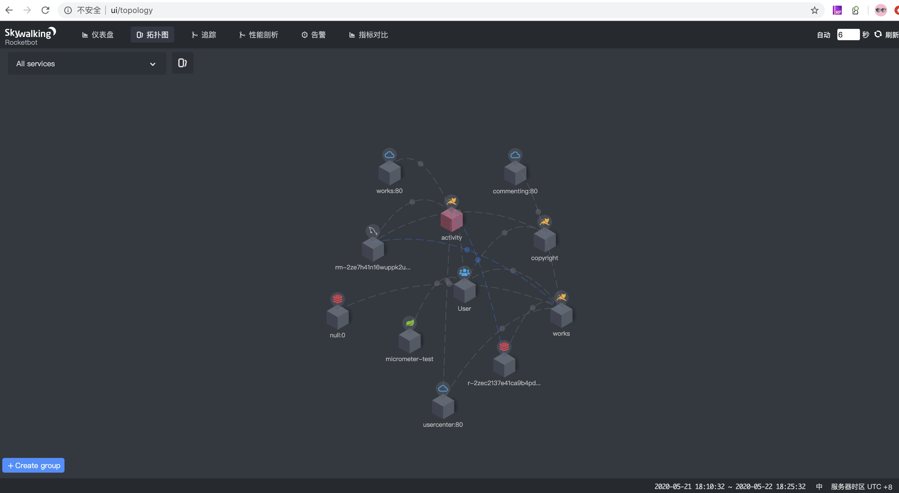
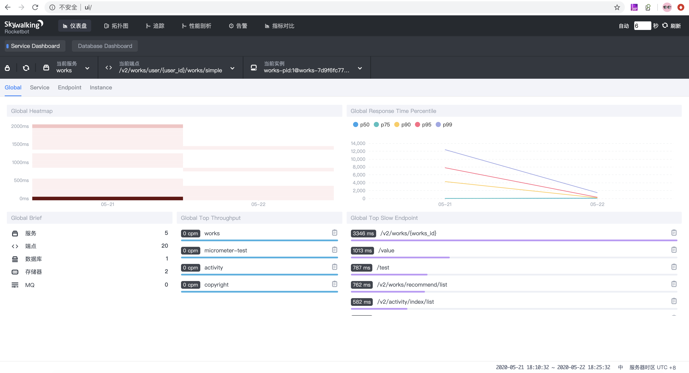

SkyWalking分布式链路追踪
阅读
发表于：2020年5月23日
在当前微服务系统架构下，微服务系统的治理变得非常的重要，微服务系统治理的好坏关乎整个微服务项目的成败，其中分布式的链路追踪APM系统是整个微服务治理体系中比较重要的一个部分。
Skywalking是由华为工程师编写，并捐献给Apache的一个非常出色的APM系统。
Apache Skywalking(Incubator) 专门为微服务架构和云原生架构系统而设计并且支持分布式链路追踪的APM系统。Apache Skywalking(Incubator)通过加载探针的方式收集应用调用链路信息，并对采集的调用链路信息进行分析，生成应用间关系和服务间关系以及服务指标。Apache Skywalking (Incubating)目前支持多种语言，其中包括Java，.Net Core，Node.js和Go语言。
总体架构
Skywalking的总体架构如下图所示：

Skywalking有四部分组成：
- trace agent
Skywalking目前支付包括了.Net Core, Golang, Node.js和Java多种语言的agent实现。
- oap server
它是skywalking的核心服务，负责接收来自agent的追踪链路信息，进行分析和存储，同时向skywalking ui用户端口提供数据接口服务。
- skywalking存储
skywalking支持多种存储形式，从基于文件的h2数据库，到elasticsearch分布式搜索存储。
- skywalking ui
skywalking用户界面，提供概览、系统拓扑结构，链路追踪等功能。
Skywalking提供了多种安装方式，可以基于jar包启动，可以通过docker镜像部署，也可以通过kubernetes进行部署，并且官方都提供了相应的 setup方法。
下面描述如果通过官方镜像自定义镜像的方式来安装skywalking。
为什么需要自定义镜像，因为官方镜像的时区跟国内不一样，采用的标准UTC时区，在国内应用时不太方便，另外，我们可以通过自定义镜像的方式来增加我们自己的业务需求。
本文档中使用的镜像docker file构建脚本已经上传到github。
在kubernetes环境中的部署安装
- 创建sky walking命名空间
|
|
kubectl apply -f namespace.yaml
- 在kubernetes中创建elasticsearch集群
apiVersion: v1
kind: Service
metadata:
name: elasticsearch
namespace: skywalking
labels:
service: elasticsearch
spec:
clusterIP: None
ports:
- port: 9200
name: serving
- port: 9300
name: node-to-node
selector:
service: elasticsearch
---
apiVersion: apps/v1
kind: StatefulSet
metadata:
name: elasticsearch
namespace: skywalking
labels:
service: elasticsearch
spec:
serviceName: elasticsearch
replicas: 1
selector:
matchLabels:
service: elasticsearch
template:
metadata:
labels:
service: elasticsearch
spec:
terminationGracePeriodSeconds: 300
initContainers:
# NOTE:
# To increase the default vm.max_map_count to 262144
# https://www.elastic.co/guide/en/elasticsearch/reference/current/docker.html#docker-cli-run-prod-mode
- name: increase-the-vm-max-map-count
image: busybox
imagePullPolicy: IfNotPresent
command:
- sysctl
- -w
- vm.max_map_count=262144
securityContext:
privileged: true
# To increase the ulimit
# https://www.elastic.co/guide/en/elasticsearch/reference/current/docker.html#_notes_for_production_use_and_defaults
- name: increase-the-ulimit
image: busybox
imagePullPolicy: IfNotPresent
command:
- sh
- -c
- ulimit -n 65536
securityContext:
privileged: true
containers:
- name: elasticsearch
image: registry.cn-beijing.aliyuncs.com/basicciimage/es_utc8:7.5
imagePullPolicy: IfNotPresent
ports:
- containerPort: 9200
name: http
- containerPort: 9300
name: tcp
# NOTE: you can increase this resources
resources:
requests:
memory: 2Gi
limits:
memory: 2Gi
env:
# NOTE: the cluster name; update this
- name: cluster.name
value: elasticsearch
- name: node.name
valueFrom:
fieldRef:
fieldPath: metadata.name
# NOTE: This will tell the elasticsearch node where to connect to other nodes to form a cluster
- name: discovery.zen.ping.unicast.hosts
value: elasticsearch:9300
# NOTE: You can increase the heap size
- name: ES_JAVA_OPTS
value: -Xms1g -Xmx1g
kubectl apply -f elasticsearch.yml
- 创建oap sever
apiVersion: v1
kind: ServiceAccount
metadata:
name: skywalking-oap
namespace: skywalking
---
apiVersion: rbac.authorization.k8s.io/v1
kind: RoleBinding
metadata:
name: skywalking-oap
namespace: skywalking
roleRef:
apiGroup: rbac.authorization.k8s.io
kind: Role
name: skywalking-oap
subjects:
- kind: ServiceAccount
name: skywalking-oap
namespace: skywalking
---
kind: Role
apiVersion: rbac.authorization.k8s.io/v1
metadata:
namespace: skywalking
name: skywalking-oap
rules:
- apiGroups: [""]
resources: ["pods"]
verbs: ["get", "watch", "list"]
---
apiVersion: v1
kind: Service
metadata:
name: oap
namespace: skywalking
labels:
service: oap
spec:
ports:
- port: 12800
name: rest
- port: 11800
name: grpc
- port: 1234
name: page
selector:
app: oap
---
apiVersion: apps/v1
kind: Deployment
metadata:
name: oap
namespace: skywalking
spec:
replicas: 1
selector:
matchLabels:
app: oap
template:
metadata:
labels:
app: oap
release: skywalking
spec:
serviceAccountName: skywalking-oap
containers:
- name: oap
image: registry.cn-beijing.aliyuncs.com/basicciimage/skywalking_oap:7.0.0
imagePullPolicy: Always
ports:
- containerPort: 11800
name: grpc
- containerPort: 12800
name: rest
resources:
requests:
memory: 1Gi
limits:
memory: 2Gi
env:
- name: JAVA_OPTS
value: -Xms256M -Xmx512M
- name: SW_STORAGE
value: elasticsearch7
- name: SW_STORAGE_ES_CLUSTER_NODES
value: "elasticsearch:9200"
- 创建oap ui
apiVersion: v1
kind: Service
metadata:
name: ui
namespace: skywalking
labels:
service: ui
spec:
ports:
- protocol: TCP
port: 80
targetPort: 8080
name: http
selector:
app: ui
---
apiVersion: apps/v1
kind: Deployment
metadata:
name: ui-deployment
namespace: skywalking
labels:
app: ui
spec:
replicas: 1
selector:
matchLabels:
app: ui
template:
metadata:
labels:
app: ui
spec:
containers:
- name: ui
image: registry.cn-beijing.aliyuncs.com/basicciimage/skywalking_oap_ui:7.0.0
imagePullPolicy: Always
ports:
- containerPort: 8080
name: http
resources:
requests:
memory: 1Gi
limits:
memory: 2Gi
env:
- name: SW_OAP_ADDRESS
value: oap:12800
如果创建成功后，可以查看到在skywalking命名空间下出现如下资源
NAME READY STATUS RESTARTS AGE
pod/elasticsearch-0 1/1 Running 0 2d23h
pod/oap-6765567f98-wl684 1/1 Running 0 2d9h
pod/ui-deployment-6f7cfd5f-j9gjp 1/1 Running 0 2d6h
NAME TYPE CLUSTER-IP EXTERNAL-IP PORT(S) AGE
service/elasticsearch ClusterIP None <none> 9200/TCP,9300/TCP 2d23h
service/oap ClusterIP 172.29.160.127 <none> 12800/TCP,11800/TCP,1234/TCP 2d10h
service/ui ClusterIP 172.29.148.226 <none> 80/TCP 2d6h
NAME READY UP-TO-DATE AVAILABLE AGE
deployment.apps/oap 1/1 1 1 2d10h
deployment.apps/ui-deployment 1/1 1 1 2d6h
NAME DESIRED CURRENT READY AGE
replicaset.apps/oap-55dd48584f 0 0 0 2d9h
replicaset.apps/oap-6765567f98 1 1 1 2d9h
replicaset.apps/oap-76958555f9 0 0 0 2d10h
replicaset.apps/oap-79c5dbdcbd 0 0 0 2d9h
replicaset.apps/oap-96575cbf9 0 0 0 2d10h
replicaset.apps/ui-deployment-6f7cfd5f 1 1 1 2d6h
NAME READY AGE
statefulset.apps/elasticsearch 1/1 2d23h
目前创建的oap ui使用是clusterip方式，如果需要对外访问可以通过slb，nodeport或ingress将oap ui服务提供 endpoint地址。
安装成功后通过的访问界面如下：


Java Agent的使用
服务端安装成功后，可以通过java agent技术向skywalking上报链路追踪信息，在java命令中增加agent指令
|
|
排队监控endpoint
在微服务中我们一般会提供一些健康检查机制，这类健康检查机制的endpoint会相当频繁的调用，我们可以通过plugin的方式将此种类型的endpoint排队在监控之外。
排队监控endpoint是通过apm-trace-ignore-plugin这个plugin实现的。
在安装agent镜像的时候，需要将 optional-plugins目录下的apm-trace-ignore-plugin-7.0.0.jar包拷贝到plugins目录下。
同时在config目录下增加apm-trace-ignore-plugin.config配置文件，文件内容为
# Licensed to the Apache Software Foundation (ASF) under one
# or more contributor license agreements. See the NOTICE file
# distributed with this work for additional information
# regarding copyright ownership. The ASF licenses this file
# to you under the Apache License, Version 2.0 (the
# "License"); you may not use this file except in compliance
# with the License. You may obtain a copy of the License at
#
# http://www.apache.org/licenses/LICENSE-2.0
#
# Unless required by applicable law or agreed to in writing, software
# distributed under the License is distributed on an "AS IS" BASIS,
# WITHOUT WARRANTIES OR CONDITIONS OF ANY KIND, either express or implied.
# See the License for the specific language governing permissions and
# limitations under the License.
# If the operation name of the first span is matching, this segment should be ignored
# ant path match style
# /path/? Match any single character
# /path/* Match any number of characters
# /path/** Match any number of characters and support multilevel directories
# Multiple path comma separation, like trace.ignore_path=/eureka/**,/consul/**
#trace.ignore_path=${SW_AGENT_TRACE_IGNORE_PATH:/eureka/**}
trace.ignore_path=${SW_AGENT_TRACE_IGNORE_PATH:/actuator/**}
这样我们就可以通过-Dskywalking.trace.ignore_path=来指定需要排除的endpoint，也可以通过SW_AGENT_TRACE_IGNORE_PATH环境变量来指定了。